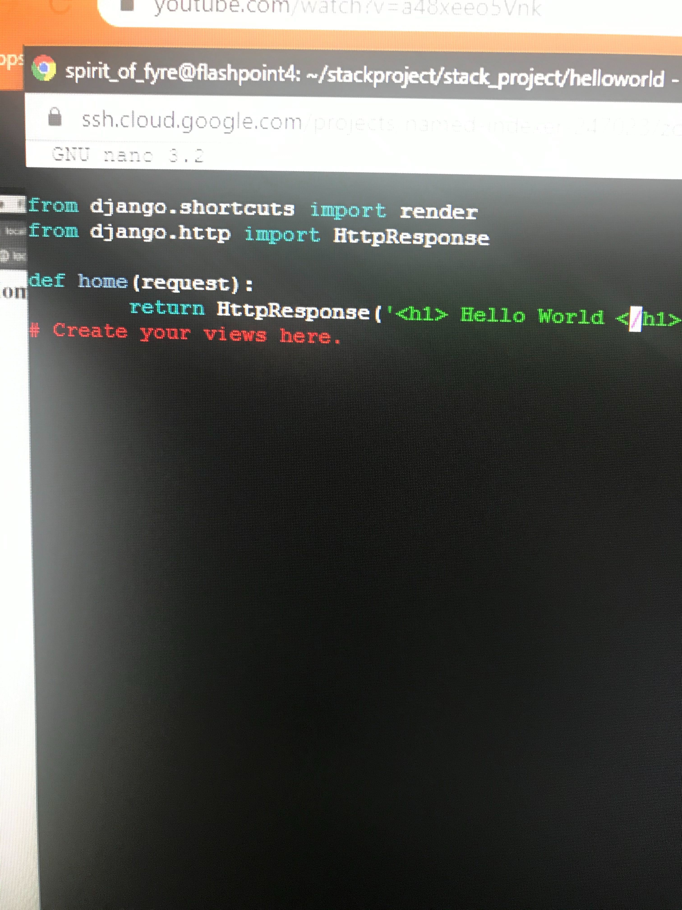
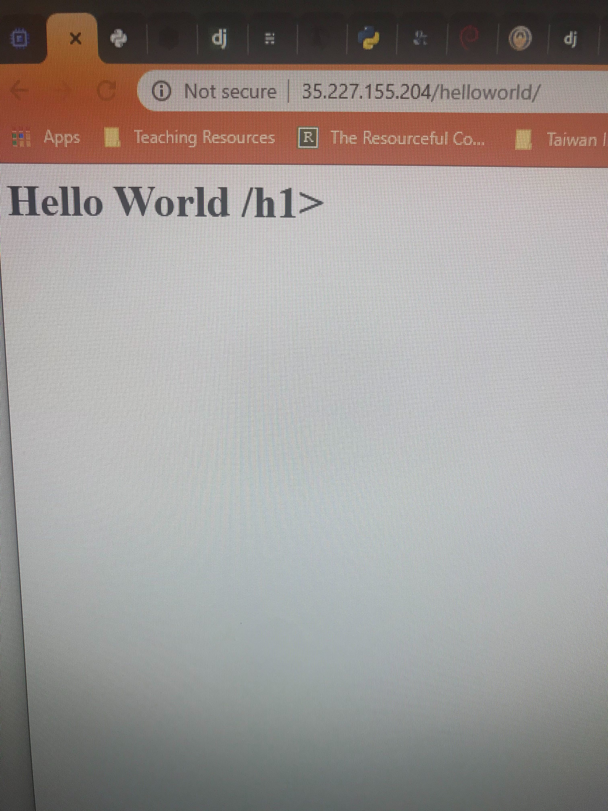

ITC134: Our basic webpage for our Python Django stack
Python-Django-Apache-MySQL Stack - Google Cloud Platform
What is Django, and why use it?
Django is one of the most popular open source frameworks for Python-based back end applications. It is touted as being superior for quick and easy development and deployment, with many built-in features such as virtual environments, admin console, mini server, and it’s own database option. It’s strengths include future proofing for scalability, security, and simplifying work for developers, with it’s “Don’t Repeat Yourself” methodology, allowing developers to re-use sections of code rapidly through the use of Views and Templates.
Many companies are known for using Django, including such sites as: Spotify, Instagram, The Washington Post, NASA, and Pinterest, among many other recognizable names.
Because Django is open-source, it has plenty of documentation (at times it feels like there’s too much), and comes with a lot of features included that other frameworks would need to be added on. It’s based on Python, a language that is touted as being one of the easiest to learn. Once you are familiar with it, many claim Django to be very simple and quick to use.
When not to use Django
Our experience as new users to Python and Django was a bit different, and installing it as a stack on GCP was challenging at many points along the path, with multiple research dead-ends. There is a complexity with all Django has to offer, which, once set-up, can provide a lot of reusability, which would be useful for larger-scope projects that need to make use of cutting edge technology and scalability. However, that complexity makes the initial adoption potentially very challenging.
We feel it’s important to point out a couple reasons not to use Django, summed up nicely by Kalpit’s article, “When to Use Django (And When Not To)”, at Medium. A couple of their points about when not to use Django (summarized below), resonated with our experience:
- If you are just building a basic app, which doesn’t require anything remotely complex (like a “Hello World” application).
- If your team isn’t familiar with Django or Python at all, and you don’t have the time to gather the required skills.
Python/Django Stack Tutorial
We researched the best way to install a Python/Django stack to the Google Cloud Platform Compute Instance. Our tutorial can be found here:
Web App Creation Tutorial
We were able to create a "Hello World" app using the Django/Python stack. Our tutorial for this can be found here:
I created a google doc from copying Megan's markdown document from Github--do we need her google doc link?
By the time we completed the Web App, we were able to have Python Code, displaying HTML in a web browser window!
 
Github Repository
feel free to check out our work in more detail at our Github Repo.